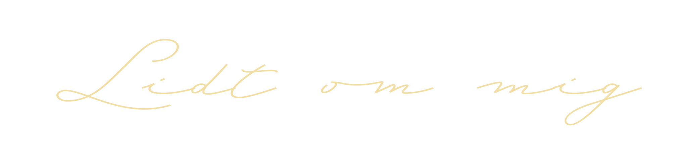

Navnet er Kirstine Aggergaard, jeg er 23 år og bor i København NV.
Jeg har så længe jeg husker været glad for at være kreativ i alt hvad jeg foretager mig. Dette resulterer i mønsterelev i billedekunst i folkeskolen, efterskoleophold på kunstlinje, mediefaglig STX og et halvt år på kunsthøjskole.
Jeg søgte ind på multimediedesign uden rigtig at vide hvad jeg går ind til, men opdager til mit held en stor interresse og nysgerrighed for alle kundskaber jeg bliver introduceret til.